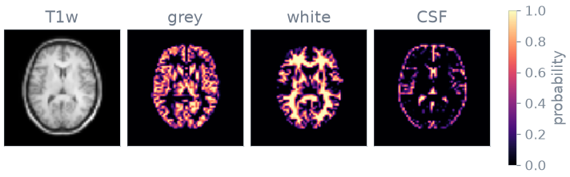
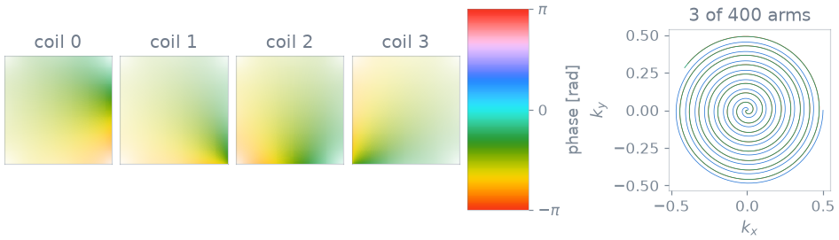
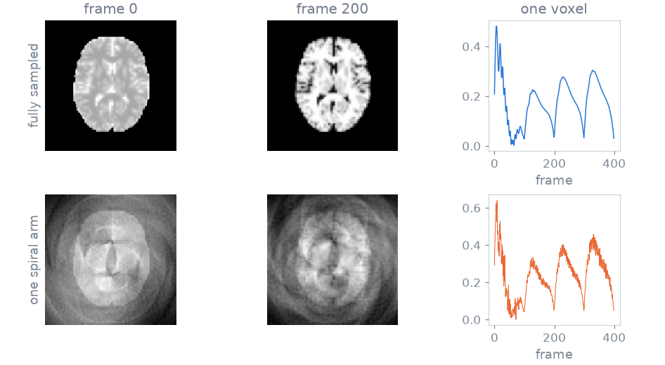
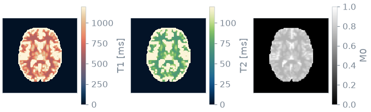

Note
Go to the end to download the full example code or to run this example in your browser via Binder.
Synthetic fingerprint#
In this Application you build a training pair for MR fingerprinting: the undersampled image series a scanner would produce, the fully sampled series it approximates, and the T1, T2 and M0 maps they come from.
The pipeline segments a T1-weighted subject into grey matter, white matter and CSF, assigns each class an M0, T1 and T2, simulates one fingerprint per class with extended phase graphs, and mixes the fingerprints voxelwise by tissue fraction. The volume is then weighted by birdcage coil sensitivities and encoded with a frame-wise spiral NUFFT. The adjoint and a coil combination return the image series. Only the simulation is blochsim’s. torchio, deepmriprep, SigPy and mri-nufft provide the subject, the segmentation, the coils and the encoding.
Prerequisites: Course lessons 1. Your first simulation.
Setup#
Each package has one task here: torchio loads a T1-weighted IXI subject,
deepmriprep segments it with a U-Net and returns tissue probabilities,
sigpy.mri generates birdcage coil sensitivities, and mri-nufft provides the
spiral trajectory and the non-uniform Fourier transform.
import tempfile
import time
import mrinufft
import numpy as np
import sigpy.mri as smri
import torch
import torchio as tio
from deepmriprep import Preprocess
from mrinufft.trajectories import initialize_2D_spiral
from pathlib import Path
from blochsim.simulators import MRFSimulator
The pair has a 128 x 128 matrix, 400 frames with one spiral arm of 768 samples each, and 8 receive channels.
SIZE = 128
FRAMES = 400
SAMPLES = 768
COILS = 8
SLICE = 110 # axial, at the level of the lateral ventricles
# The GPU transform is used when it is installed and usable, and the simulation
# follows it so that the images and the operator are on one device.
on_gpu = torch.cuda.is_available() and mrinufft.check_backend("cufinufft")
device = "cuda" if on_gpu else "cpu"
backend = "cufinufft" if on_gpu else "finufft"
Subject#
The only measurement the pipeline starts from is one IXI subject loaded by
torchio: a T1-weighted volume at 1.5 T. The segmentation reads it, and a table
supplies the tissue properties that a single contrast cannot give.
download=True fetches the archive once, a few hundred MB, into a cache under
the home directory.
CACHE = Path.home() / ".cache" / "blochsim" / "ixi-tiny"
subject = tio.datasets.IXITiny(str(CACHE), download=True)[0]
Downloading https://www.dropbox.com/s/ogxjwjxdv5mieah/ixi_tiny.zip?dl=1 to /tmp/tmpdhv556zz.zip
0it [00:00, ?it/s]
0%| | 0/233926107 [00:01<?, ?it/s]
1%|▏ | 3055616/233926107 [00:01<00:07, 30519152.57it/s]
7%|▋ | 16809984/233926107 [00:01<00:02, 80198102.46it/s]
11%|█ | 25231360/233926107 [00:01<00:02, 79908182.18it/s]
15%|█▍ | 34963456/233926107 [00:01<00:02, 86327687.32it/s]
19%|█▉ | 44187648/233926107 [00:01<00:02, 83560835.45it/s]
23%|██▎ | 52903936/233926107 [00:01<00:02, 84703147.06it/s]
26%|██▌ | 61177856/233926107 [00:02<00:02, 84037282.07it/s]
31%|███ | 71548928/233926107 [00:02<00:01, 85836207.59it/s]
34%|███▍ | 80412672/233926107 [00:02<00:01, 86660080.04it/s]
39%|███▊ | 90505216/233926107 [00:02<00:01, 86461977.20it/s]
43%|████▎ | 100581376/233926107 [00:02<00:01, 90548619.26it/s]
47%|████▋ | 109608960/233926107 [00:02<00:01, 85693545.57it/s]
51%|█████ | 118210560/233926107 [00:02<00:01, 85664297.75it/s]
55%|█████▍ | 128401408/233926107 [00:02<00:01, 86179891.89it/s]
59%|█████▉ | 137560064/233926107 [00:02<00:01, 87700363.45it/s]
63%|██████▎ | 147341312/233926107 [00:03<00:01, 85860360.90it/s]
67%|██████▋ | 157057024/233926107 [00:03<00:00, 89011607.18it/s]
71%|███████ | 166297600/233926107 [00:03<00:00, 86061562.06it/s]
76%|███████▌ | 176816128/233926107 [00:03<00:00, 87020465.09it/s]
80%|███████▉ | 186646528/233926107 [00:03<00:00, 90135638.10it/s]
84%|████████▎ | 195772416/233926107 [00:03<00:00, 86790708.52it/s]
88%|████████▊ | 205848576/233926107 [00:03<00:00, 90691627.88it/s]
92%|█████████▏| 214982656/233926107 [00:03<00:00, 85211096.82it/s]
96%|█████████▋| 225247232/233926107 [00:03<00:00, 85826520.86it/s]
233930752it [00:05, 45079792.20it/s]
Tissue classes#
deepmriprep segments the head into grey matter, white matter and CSF with a U-Net. It returns three probability maps, not one label per voxel, so the phantom contains partial volume.
NAMES = ("grey matter", "white matter", "CSF")
segmentation = Preprocess().run(
str(subject.image.path),
output_paths={
name: f"{tempfile.gettempdir()}/{name}.nii.gz" for name in ("p1", "p2", "p3")
},
run_all=False,
)

Downloaded https://raw.githubusercontent.com/wwu-mmll/deepmriprep/main/deepmriprep/data/models/brain_extraction_bbox_model.pt to /opt/hostedtoolcache/Python/3.12.15/x64/lib/python3.12/site-packages/deepmriprep/data/models/brain_extraction_bbox_model.pt
Downloaded https://raw.githubusercontent.com/wwu-mmll/deepmriprep/main/deepmriprep/data/models/brain_extraction_model.pt to /opt/hostedtoolcache/Python/3.12.15/x64/lib/python3.12/site-packages/deepmriprep/data/models/brain_extraction_model.pt
Downloaded https://raw.githubusercontent.com/wwu-mmll/deepmriprep/main/deepmriprep/data/models/segmentation_nogm_model.pt to /opt/hostedtoolcache/Python/3.12.15/x64/lib/python3.12/site-packages/deepmriprep/data/models/segmentation_nogm_model.pt
Downloaded https://raw.githubusercontent.com/wwu-mmll/deepmriprep/main/deepmriprep/data/models/segmentation_patch_0_model.pt to /opt/hostedtoolcache/Python/3.12.15/x64/lib/python3.12/site-packages/deepmriprep/data/models/segmentation_patch_0_model.pt
Downloaded https://raw.githubusercontent.com/wwu-mmll/deepmriprep/main/deepmriprep/data/models/segmentation_patch_1_model.pt to /opt/hostedtoolcache/Python/3.12.15/x64/lib/python3.12/site-packages/deepmriprep/data/models/segmentation_patch_1_model.pt
Downloaded https://raw.githubusercontent.com/wwu-mmll/deepmriprep/main/deepmriprep/data/models/segmentation_patch_2_model.pt to /opt/hostedtoolcache/Python/3.12.15/x64/lib/python3.12/site-packages/deepmriprep/data/models/segmentation_patch_2_model.pt
Downloaded https://raw.githubusercontent.com/wwu-mmll/deepmriprep/main/deepmriprep/data/models/segmentation_patch_3_model.pt to /opt/hostedtoolcache/Python/3.12.15/x64/lib/python3.12/site-packages/deepmriprep/data/models/segmentation_patch_3_model.pt
Downloaded https://raw.githubusercontent.com/wwu-mmll/deepmriprep/main/deepmriprep/data/models/segmentation_patch_4_model.pt to /opt/hostedtoolcache/Python/3.12.15/x64/lib/python3.12/site-packages/deepmriprep/data/models/segmentation_patch_4_model.pt
Downloaded https://raw.githubusercontent.com/wwu-mmll/deepmriprep/main/deepmriprep/data/models/segmentation_patch_5_model.pt to /opt/hostedtoolcache/Python/3.12.15/x64/lib/python3.12/site-packages/deepmriprep/data/models/segmentation_patch_5_model.pt
Downloaded https://raw.githubusercontent.com/wwu-mmll/deepmriprep/main/deepmriprep/data/models/segmentation_patch_6_model.pt to /opt/hostedtoolcache/Python/3.12.15/x64/lib/python3.12/site-packages/deepmriprep/data/models/segmentation_patch_6_model.pt
Downloaded https://raw.githubusercontent.com/wwu-mmll/deepmriprep/main/deepmriprep/data/models/segmentation_patch_7_model.pt to /opt/hostedtoolcache/Python/3.12.15/x64/lib/python3.12/site-packages/deepmriprep/data/models/segmentation_patch_7_model.pt
Downloaded https://raw.githubusercontent.com/wwu-mmll/deepmriprep/main/deepmriprep/data/models/segmentation_patch_8_model.pt to /opt/hostedtoolcache/Python/3.12.15/x64/lib/python3.12/site-packages/deepmriprep/data/models/segmentation_patch_8_model.pt
Downloaded https://raw.githubusercontent.com/wwu-mmll/deepmriprep/main/deepmriprep/data/models/segmentation_patch_9_model.pt to /opt/hostedtoolcache/Python/3.12.15/x64/lib/python3.12/site-packages/deepmriprep/data/models/segmentation_patch_9_model.pt
Downloaded https://raw.githubusercontent.com/wwu-mmll/deepmriprep/main/deepmriprep/data/models/segmentation_patch_10_model.pt to /opt/hostedtoolcache/Python/3.12.15/x64/lib/python3.12/site-packages/deepmriprep/data/models/segmentation_patch_10_model.pt
Downloaded https://raw.githubusercontent.com/wwu-mmll/deepmriprep/main/deepmriprep/data/models/segmentation_patch_11_model.pt to /opt/hostedtoolcache/Python/3.12.15/x64/lib/python3.12/site-packages/deepmriprep/data/models/segmentation_patch_11_model.pt
Downloaded https://raw.githubusercontent.com/wwu-mmll/deepmriprep/main/deepmriprep/data/models/segmentation_patch_12_model.pt to /opt/hostedtoolcache/Python/3.12.15/x64/lib/python3.12/site-packages/deepmriprep/data/models/segmentation_patch_12_model.pt
Downloaded https://raw.githubusercontent.com/wwu-mmll/deepmriprep/main/deepmriprep/data/models/segmentation_patch_13_model.pt to /opt/hostedtoolcache/Python/3.12.15/x64/lib/python3.12/site-packages/deepmriprep/data/models/segmentation_patch_13_model.pt
Downloaded https://raw.githubusercontent.com/wwu-mmll/deepmriprep/main/deepmriprep/data/models/segmentation_patch_14_model.pt to /opt/hostedtoolcache/Python/3.12.15/x64/lib/python3.12/site-packages/deepmriprep/data/models/segmentation_patch_14_model.pt
Downloaded https://raw.githubusercontent.com/wwu-mmll/deepmriprep/main/deepmriprep/data/models/segmentation_patch_15_model.pt to /opt/hostedtoolcache/Python/3.12.15/x64/lib/python3.12/site-packages/deepmriprep/data/models/segmentation_patch_15_model.pt
Downloaded https://raw.githubusercontent.com/wwu-mmll/deepmriprep/main/deepmriprep/data/models/segmentation_patch_16_model.pt to /opt/hostedtoolcache/Python/3.12.15/x64/lib/python3.12/site-packages/deepmriprep/data/models/segmentation_patch_16_model.pt
Downloaded https://raw.githubusercontent.com/wwu-mmll/deepmriprep/main/deepmriprep/data/models/segmentation_patch_17_model.pt to /opt/hostedtoolcache/Python/3.12.15/x64/lib/python3.12/site-packages/deepmriprep/data/models/segmentation_patch_17_model.pt
Downloaded https://raw.githubusercontent.com/wwu-mmll/deepmriprep/main/deepmriprep/data/models/segmentation_model.pt to /opt/hostedtoolcache/Python/3.12.15/x64/lib/python3.12/site-packages/deepmriprep/data/models/segmentation_model.pt
Downloaded https://raw.githubusercontent.com/wwu-mmll/deepmriprep/main/deepmriprep/data/models/warp_model.pt to /opt/hostedtoolcache/Python/3.12.15/x64/lib/python3.12/site-packages/deepmriprep/data/models/warp_model.pt
128x128 slice, 5735 brain voxels; 92% are a mixture of two tissues or more
The figure shows the T1-weighted contrast and the three probabilities.
Each class takes an M0, a T1 and a T2 from a table, here values at 1.5 T. A T1-weighted volume is a contrast and not a map, so the table cannot be read from this subject: the measurement gives the location and fraction of each tissue, and the table gives its properties. A relaxometry protocol on the same subject would fill the table from data.
class_M0 = torch.tensor([0.80, 0.70, 1.00]) # relative proton density
class_T1 = torch.tensor([1100.0, 650.0, 4000.0]) # ms
class_T2 = torch.tensor([95.0, 70.0, 2000.0]) # ms
tissue voxels M0 T1 (ms) T2 (ms)
grey matter 2427 0.80 1100 95.0
white matter 2294 0.70 650 70.0
CSF 571 1.00 4000 2000.0
Simulation per class#
The sequence is an inversion followed by 400 repetitions whose flip angle
follows a sinusoidal schedule. MRFSimulator
accepts tensor-valued tissue properties, so the three classes are simulated in
one call, as three EPG runs instead of one per voxel.
schedule = 5.0 + 55.0 * torch.sin(torch.linspace(0.0, 4 * torch.pi, FRAMES)).abs()
simulator = MRFSimulator(TR=12.0, TI=20.0, T1=class_T1, T2=class_T2)
per_class = torch.as_tensor(simulator.simulate(flip=schedule))
3 classes x 400 frames in 0.1s -> (3, 400)
Whole-brain volume#
A voxel that is part grey matter and part CSF produces the sum of the two fingerprints, weighted by the tissue fractions, and not the fingerprint of the averaged relaxation times. An inversion-prepared train is strongly nonlinear in T1, so averaging the parameters before simulating is wrong in every voxel that is not pure. The mixing is a matrix product over the class fingerprints:
weights = (fractions * class_M0).to(per_class.dtype)
series = (weights @ per_class) * brain[..., None]
The ground-truth maps are the fraction-weighted averages of the class parameters, the best result a single-compartment fit of this data can return:
share = occupancy.clamp_min(1e-6)
truth_M0 = (fractions @ class_M0) * brain
truth_T1 = (fractions @ class_T1) / share * brain
truth_T2 = (fractions @ class_T2) / share * brain
Coils and encoding#
The coil sensitivities are birdcage maps from SigPy. Each frame is encoded by one spiral arm, rotated by the golden angle from the previous frame, so consecutive frames sample different parts of k-space. One arm of 768 samples on a 128 x 128 matrix is about 21-fold undersampled, as in fingerprinting acquisitions.
sensitivities = torch.as_tensor(smri.birdcage_maps((COILS, SIZE, SIZE))).to(
torch.complex64
)
trajectory = initialize_2D_spiral(
FRAMES, SAMPLES, tilt="golden", nb_revolutions=8
).astype(np.float32)
build = mrinufft.get_operator(backend)
arms = [
build(
trajectory[frame], (SIZE, SIZE), n_coils=COILS, squeeze_dims=False, density=True
)
for frame in range(FRAMES)
]
400 arms built in 4.6s
The forward transform takes the coil-weighted image of each frame to k-space:

forward NUFFT 8.7s -> (400, 8, 768)
The figure shows four of the eight coil sensitivities and three of the arms.
Reconstruction#
Each frame is reconstructed by the adjoint transform, and the channels are combined with the sensitivity maps. The maps are known here; a real pipeline estimates them.
adjoint and combine 8.1s
Data pair#
The training input is the undersampled series combined and the target is the
fully sampled series series. Each frame contains one spiral arm, so
aliasing in a single frame exceeds the signal, but the time course of each
voxel retains the fingerprint, which is what a fingerprinting reconstruction
uses. Both series are normalised to their peak magnitude.

per-frame error inside the brain : 60.7%
time-course agreement : median 0.893, tenth percentile 0.714
The printed error is the mean per-frame error in the brain. The time-course agreement is the normalised inner product between the undersampled and the fully sampled time course of each voxel.
Ground-truth maps#

The T1 and T2 maps use perceptually uniform colormaps, one per relaxation parameter, so that a T1 map is never read as a T2 map [1].
Export#
The archive holds the pair, the ground-truth maps, the segmentation, and the schedule and trajectory that produced them. It is written to a temporary directory so that a documentation build leaves no file behind.
contents = {
"undersampled": undersampled.cpu().numpy(),
"reference": reference.cpu().numpy(),
"M0": truth_M0.numpy(),
"T1": truth_T1.numpy(),
"T2": truth_T2.numpy(),
"tissue_probabilities": fractions.numpy(),
"flip_angles_deg": schedule.numpy(),
"trajectory": trajectory,
}
synthetic_mrf.npz 56.6 MiB
undersampled (400, 128, 128) complex64
reference (400, 128, 128) complex64
M0 (128, 128) float32
T1 (128, 128) float32
T2 (128, 128) float32
tissue_probabilities (128, 128, 3) float32
flip_angles_deg (400,) float32
trajectory (400, 768, 2) float32
Command-line interface#
To turn the script into a tool, replace three inputs and keep the rest:
the torchio subject by a T1-weighted NIfTI, which is the contrast the segmentation was trained on;
the generated spiral and sine schedule by a trajectory and a flip-angle schedule read from a matfile;
the temporary directory by an output path.
The tissue table is the one input that is chosen and not read.
References#
Specification#
What this Application did, stated the way you would ask an agent for it:
Build a synthetic MR fingerprinting training pair. Load an IXI subject with
torchio and segment it into grey matter, white matter and CSF with
deepmriprep. Give each class M0, T1 and T2 from a table at 1.5 T and
simulate one inversion-prepared MRFSimulator train of 400 frames per class.
Mix the fingerprints by tissue fraction, weight by 8 birdcage coils, encode
with one golden-angle spiral arm per frame (mri-nufft), then reconstruct
each frame by the adjoint and a coil combination. Report the per-frame error
and the time-course agreement, and save the pair with the maps and schedule.
Total running time of the script: (2 minutes 10.980 seconds)